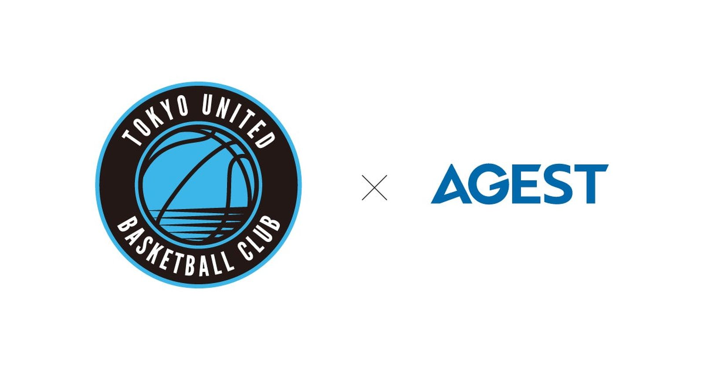

「機敏性」で重なる2社 —— AGEST、東京ユナイテッドバスケットボールクラブとオフィシャルパートナー契約
ソフトウェアの品質・安全性向上を手がける株式会社AGEST(東京都文京区、代表取締役社長執行役員CEO・二宮康真)は8月21日、2026-27シーズンより東京ユナイテッドバスケットボールクラブ(TUBC、本拠地・東京都江東区)とのオフィシャルパートナー契約を締結したと発表した。

有明を拠点に、5シーズン目のクラブ
TUBCは有明アリーナを本拠地に、東京ベイエリア（東京湾岸・隅田川、東京東側エリア）をホームエリアとするB.LEAGUEクラブ。代表取締役社長は家本賢太郎氏で、2026-27シーズンはクラブ創設から5シーズン目の節目にあたる。年間約200回に及ぶ地域イベントへの参加を通じて地域に根ざした活動を続けてきたクラブだという。
社名に込めた「機敏性」で重なる
AGESTの社名には、Agility（機敏性）とBest（最高品質）を追求する思いが込められている。リリースでは、コート上を疾走し常に最高のパフォーマンスを目指すTUBCの選手たちの姿と、技術・品質向上に挑む自社の姿勢が重なったことをパートナーシップ締結の背景として説明している。
クラブ代表・家本賢太郎氏のコメント
TUBCの家本賢太郎代表取締役社長はコメントで、AGESTの機敏性や瞬発力、立ち止まらない挑戦の姿勢について「まさにコートの上で私たちが体現しようとしているバスケットボールの本質そのもの」と表現。今シーズンから始動した取り組み「B.革新」をさらに加速させる転換点になるとの期待を示した。
出典: 株式会社AGESTプレスリリース「AGEST、東京ユナイテッドバスケットボールクラブとのオフィシャルパートナー契約締結のお知らせ」（PR TIMES・2026年8月21日）
https://prtimes.jp/main/html/rd/p/000000085.000137899.html